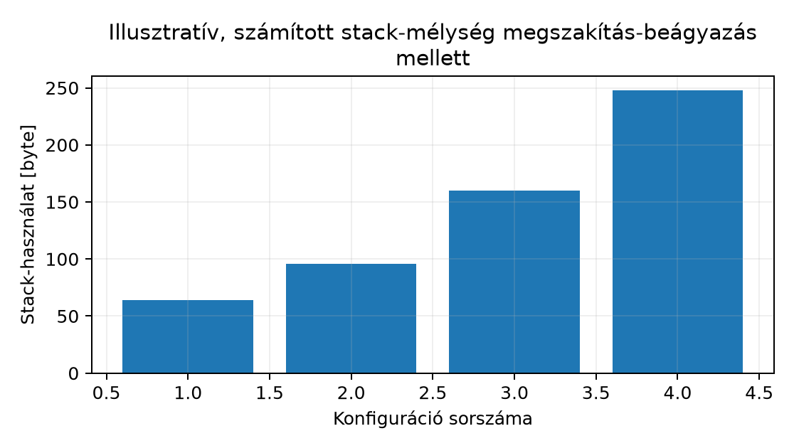

Az a080 lezárta a firmware-modult mérhető és reprodukálható formában: funkcionális validáció, latenciamérés, elfogadási kritériumok. Egy átadásra kész modul azonban nem attól lesz megbízható, hogy a tesztesetek átmentek rajta. A validáció azt igazolja, hogy amit előre rögzítettünk, az helyesen fut le. Az audit azt keresi, hogy mi az, amit nem rögzítettünk, és ami a valós üzem közben hibát okozhat. A kettő nem helyettesíti egymást: a validáció a helyes viselkedést igazolja, az audit a hibamódokat tárja fel.
Egy interrupt-vezérelt Cortex-M firmware tipikus hibamódjai nem determinisztikusak. Egy race condition csak akkor jelenik meg, ha az ISR pont a fő ciklus read-modify-write műveletének közepén fut le. A verem túlcsordulása csak akkor, ha a legmélyebb hívási lánc és a legtöbb beágyazott megszakítás egyszerre jelentkezik. Ezek a hibák a funkcionális teszt „zöld” eredménye mellett is ott maradnak. Az audit ezeket a rejtett feltételeket teszi láthatóvá, még azelőtt, hogy a termék ki kerülne.
A mérnöki feladat ebben az alfejezetben az, hogy a modult ne csak működtessük, hanem strukturáltan megvizsgáljuk. Az audit nem egyetlen pillanatfelvétel, hanem ismételhető eljárás: checklist, bizonyíték, küszöb, döntés.
Definíció (audit). A szoftveraudit egy független, strukturált, bizonyítékalapú vizsgálat (a validációtól módszerében különbözik: a validáció kiválasztott követelményeket és eseteket ellenőriz, az audit a szerződéseket, bizonyítékokat és lefedettségi hiányokat vizsgálja; mindkettő találhat funkcionális hibát, és egy korábbi zöld teszt a funkcionális kérdéseket nem zárja le), amelynek célja annak megállapítása, hogy egy rendszer megfelel-e előre rögzített követelményeknek, és hogy milyen hibamódok maradtak feltáratlanul. A beágyazott firmware auditja kiemelten kezeli a megszakításkezelőket, a megosztott állapotot, a veremhasználatot és az erőforráskorlátokat.
Az audit hatóköre szűkebb, mint a teljes rendszer tesztelése. Nem vizsgálja újra a funkcionális helyességet (azt az a080 validációja lefedte), hanem a nem funkcionális tulajdonságokra fókuszál:
Az audit nem azonos a kódreview-val, bár annak elemeit használja. Az auditnak bizonyítékra van szüksége: mérési adatra, disassembly-re, vagy olyan kódrészletre, amely a hibamódot reprodukálhatóan mutatja. A „szemrevételezés alapján jónak tűnik” nem auditmegállapítás.
A strukturált audit első eszköze a checklist. Az alábbi táblázat a jelen alfejezet hatókörébe tartozó kategóriákat, a hozzájuk tartozó kérdéseket és a szükséges bizonyítékokat rögzíti. A checklist nem helyettesíti a mérnöki ítéletet, de biztosítja, hogy egyetlen kategória se maradjon ki.
| Kategória | Auditkérdés | Bizonyíték | Küszöb / döntés |
|---|---|---|---|
| ISR-rövidség | Az ISR worst-case futásideje korlátos és dokumentált? | ciklusszám-mérés, disassembly | |
| Determinizmus | Minden ciklusnak van ismert maximális iterációszáma? Van-e korlátlan várakozás? | forráskód, disassembly | minden ciklus korlátos (dokumentált max.), nincs korlátlan
while, delay, allokáció |
| Race condition | Minden megosztott változó atomi vagy védett? | forráskód, megszakítás-tiltás | nincs védtelen read-modify-write |
| Verem-mélység | A worst-case stack-használat a linkeren beállított keret alatt marad? | mérés, statikus elemzés | |
| Erőforráskorlát | Az ISR CPU-terhelése a periódus alatt korlátos? | ciklusszám, periódus | |
| Watchdog | A refresh a fő ciklusban, dokumentált ponton történik? | forráskód, konfiguráció | nincs refresh ISR-ben |
A küszöbértékek nem univerzálisak; a konkrét rendszer időzítési követelményeihez kell igazítani őket. Az audit során a küszöböt a mérés előtt rögzítjük, ugyanúgy, ahogy az elfogadási kritériumokat az a080 validációjában.
Az ISR-nek nem kell feltétlenül gyorsnak lennie, hanem determinisztikusan gyorsnak. Az a megszakításkezelő, amelynek a futásideje a bemenettől függően széles sávban változik, kiszámíthatatlanul késlelteti a többi megszakítást és a fő ciklust. Az audit első kérdése ezért nem az, hogy „milyen gyors”, hanem az, hogy „mennyire korlátos és kiszámítható”.
Az ISR-rövidség ellenőrzésének lépései:
for,
while, do ciklusnál meg kell adni a
maximális iterációszámot. A bemenetfüggő ciklus nem
eleve korlátlan: egy legfeljebb 64 bájtos puffert feldolgozó ciklus
futásideje adatfüggő, de korlátos. Korlátlan az a ciklus, amelynek nincs
ismert felső határa, például egy hardverbitre korlát nélkül váró
while.delay,
sleep, buszos várakozás vagy allokáció nem megengedett
ISR-kontextusban.A CPU-terhelés levezetése: ha az -edik ISR fenti, ciklusban kifejezett WCET-je , a periódusa (másodperc), az órajel , akkor az összes ISR együttes terhelése
Ha a WCET időben adott ( másodperc), az szorzó elmarad; a lényeg, hogy a számláló és a nevező azonos egységű legyen.
Ha
megközelíti az 1-et, a fő ciklusra gyakorlatilag nem marad CPU-idő. Az
ebben a könyvben egy 50%-os projektbudget, nem
általános biztonsági vagy ütemezhetőségi garancia: kis átlagos
mellett is lehet túl hosszú megszakítás-tiltás vagy ISR, amely határidőt
sért. Ezért két külön auditpont kell: (1) az összegzett kihasználtság
,
és (2) a legrosszabb válaszidő (worst-case response time): a legnagyobb
maszkolási idő + belépés + a magasabb prioritású ISR-ek terhelése + a
saját WCET ≤ határidő. Ellenpélda: egy 1 kHz-es ISR
ciklus mellett
(25 MHz-en), de egy 5 ms-os cpsid i szakasz egy 1 ms-es
határidőt sért — az audit ezt
esetén is elutasítja. A képlet levezetés, nem mérés: feltételezi, hogy
az ISR-ek egymást nem szakítják meg tetszőlegesen, és hogy a periódusok
pontosan ismertek.
A QEMU mps2-an385 emulációjában a ciklusszám
relatív/illusztratív, ahogyan az a080 is
rögzítette. Az auditmegállapítás ilyenkor nem abszolút ciklusszám, hanem
a szerkezeti tulajdonság: van-e korlátlan ciklus, van-e
várakozás.
A race condition (versenyhelyzet) akkor áll elő, ha két végrehajtási kontextus (itt: ISR és fő ciklus) ugyanazt a megosztott állapotot nem atomi módon éri el, és a műveletek sorrendje megváltoztatja az eredményt. A beágyazott firmware-ben a leggyakoribb minta a read-modify-write:
/* Hibás: a fő ciklus és az ISR ugyanazt a számlálót módosítja */
volatile uint32_t overrun_count;
void UART0_IRQHandler(void) {
overrun_count++; /* ISR: load, add, store */
UART0_INTCLR = 1u;
}
uint32_t uart_get_overruns(void) {
uint32_t v = overrun_count; /* (C) olvasás */
overrun_count = 0u; /* (D) törlés – RACE a (C) és (D) között */
return v;
}A hiba ott van, hogy a fő program (C) olvasása és (D) írása közé az ISR beékelődhet, és növelheti a számlálót. A növelés elveszik, mert a fő ciklus a (D) lépésben felülírja. Ez a klasszikus check-then-act hiba.
A volatile kulcsszó nem nyújt védelmet.
A volatile csak azt garantálja, hogy a fordító nem
optimalizálja el az olvasást/írást, és hogy a művelet a programozott
sorrendben történik. Nem garantál atomitást, és nem hoz létre kritikus
szakaszt.
A javítási lehetőségek:
__get_PRIMASK / __disable_irq /
__set_PRIMASK (CMSIS) vagy közvetlen
MRS/MSR utasítások segítségével a
read-modify-write egy megszakíthatatlan szakaszba kerül._Atomic
vagy a Thumb-2 LDREX/STREX utasításai. Ez
összetettebb, és a gcc-arm-none-eabi támogatása
verziófüggő.LDREX/STREX-et). Pontos darabszámhoz a
védett számlálót, az ISR által egyedül írt monoton számlálót és a fő
ciklus differenciáját (g_tick − seen), vagy eseménysort
kell használni. Ha két esemény érkezik egy főciklus-leolvasás előtt, a
számláló szerződés 2-t ad, a flag csak „volt esemény”-t — a flages
megoldás ne állítsa, hogy megőrizte a darabszámot (lásd a070).Az audit nem azt kéri számon, hogy melyik megoldást választottuk,
hanem azt, hogy minden megosztott hozzáférésre legyen tudatos
döntés. A volatile önmagában nem döntés.
A veremhasználat auditja szorosan kapcsolódik a rekurzióhoz és a
stack frame felépítéséhez, amelyet az a030 és az
a027 tárgyalt. A Cortex-M esetében a hardver
maga is push-ol regisztereket a veremre, amikor egy kivételbe belép. Az
Armv7-M alapértelmezett kivétel-belépési kerete 8 szót (32 byte) tesz a
veremre: xPSR, PC, LR,
R12, R3, R2, R1,
R0, az új SP-től mérve R0-val a +0x00
offseten. Ha a belépés előtti SP nem volt 8 bájtra igazított, egy
további igazítási szó (4 byte) is elfogy; ez a keret fölött, a magasabb
címen van, a regiszteroffseteket nem tolja el. A Cortex-M3 baseline-on
ez a teljes hardveres keret.
Más magokon (nem a baseline része). FPU-s magokon (például Cortex-M4F, M7), bekapcsolt FPU és lusta mentés esetén a hardver kiterjesztett keretet is menthet: további 18 szót (
S0–S15,FPSCRés egy fenntartott szó), azaz 72 byte-ot. Ez egy másik profil tulajdonsága, és csak külön profilváltással, a konkrét mag dokumentációja szerint kerül elő; a Cortex-M3 baseline veremauditjának nem bizonytalansága.
A worst-case veremmélység levezetése:
ahol a fő program legmélyebb, megszakítható hívási láncának veremigénye, a prioritások szerint egymásba ágyazható ISR-ek száma, byte a hardveres keret, byte az opcionális igazítási szó, az -edik ISR prológusának szoftveres mentése, pedig az -edik ISR-ből induló legmélyebb hívási lánc. Minden szintnél a saját legmélyebb láncát kell venni, nem csak a legfelsőnél, mert bármelyik szint megszakítható a lánca legmélyebb pontján.
A beágyazás lényege: ha egy alacsonyabb prioritású ISR fut, és egy magasabb prioritású megszakítás érkezik, az hardveresen beágyazódik. A verem tetején egyszerre több frame lehet. Az audit során a legrosszabb kombinációt kell keresni: a legmélyebb hívási láncot a legtöbb beágyazott megszakítással kombinálva.
A hardveres keret mérete és elrendezése architekturális szabály,
ezért a QEMU mps2-an385 és a fizikai Cortex-M3 között ebben
nem lehet eltérés; ami eltérhet, az az időzítés (mikor érkezik a
beágyazó megszakítás), ezt a a071 már jelölte.
Az audit szempontjából a lényeg, hogy a tervezett
értékhez biztonsági margót rendeljünk. Egy 25–30%-os
tartalék a linkeren beállított méret és a levezetett vagy mért csúcs
között hasznos tervezési döntés, de nem
bizonyíték: a margó semmit nem igazol arról az útvonalról,
amelyet sem a levezetés, sem a mérés nem fedett le. A bizonyíték a fenti
összeg, minden szintre a dokumentált legmélyebb lánccal, és a mérés
(verem-vízjel) mint ellenpróba.
Az alábbi ábra illusztratív, számított példát mutat a veremmélység alakulására különböző konfigurációkban.

A hozzá tartozó numerikus táblázat:
| # | Konfiguráció | Stack-használat [byte] |
|---|---|---|
| 1 | main, megszakítás nélkül | 64 |
| 2 | main + 1 ISR | 96 |
| 3 | main + 2 beágyazott ISR | 160 |
| 4 | main + 2 beágyazott ISR + mély hívási lánc | 248 |
Az ábra és a táblázat értékei nem mérési eredmények, hanem a fenti képlet alapján számított illusztrációk. Az audit során ezeket a mérési adatokkal kell összevetni; ha a mért érték megközelíti a linkeren beállított stack-méretet, a margó nem elegendő.
A watchdog timer (őrző időzítő) egy hardveres vagy szoftveres mechanizmus, amely akkor állítja vissza a rendszert, ha a firmware egy meghatározott időn belül nem jelzi, hogy a fő ciklus előrehalad. A watchdog nem javítja a hibát; célja, hogy egy beragadt vagy váratlanul lelassult rendszert ismert állapotba kényszerítsen, és ezzel a rendszer elérhetőségét növelje.
Két alapvető típus terjedt el a Cortex-M világában:
main-t; teszt: beragadt főciklus
+ tovább futó ISR → reset. Independent watchdog (IWDG).
Saját, a rendszerórajeltől független órajelforrással (általában belső RC
oszcillátor) működik. Akkor is lejár, ha a fő órajel leáll vagy a PLL
elveszíti a zárat. Ez a robusztussági réteg legfontosabb
tulajdonsága.A watchdog-koncepció audit szempontjából kritikus kérdései:
A watchdog fogalmi szinten a robusztussági rétegek egyike. A konkrét regiszterek és a pontos konfiguráció MCU-specifikusak; ezek ellenőrzése külön feladat, és nem része ennek az alfejezetnek.
Munkakönyvtár: ~/arm-labor/cm/zaro2/ —
az alfejezet minden laborfájlja ide kerül, és minden parancs innen
futtatandó (a könyvtárrendet a Labor-alapkörnyezet alfejezet írja le). Ez a II.
záróprojekt közös könyvtára: mind a négy alfejezete (a078–a081) itt dolgozik, és
egymás fájljaira épít.
mkdir -p ~/arm-labor/cm/zaro2
cd ~/arm-labor/cm/zaro2Legyen az auditálandó objektum a lab-fw-uart-audit.c
modul, amely az a079 implementációjának
egyszerűsített változata. A modul egy UART vételt kezel megszakítással,
és egy körpuffert tölt.
/* lab-fw-uart-audit.c
* Szándékosan auditálandó UART vétel modul.
* Cél: race condition és ISR-viselkedés vizsgálata.
* Memóriacím: MPS2+ AN385 CMSDK UART0, dokumentált QEMU-tartomány.
* Ellenőrizendő a pontos machine memory map alapján.
*/
#include <stdint.h>
#define RX_SIZE 64u
#define RX_MASK (RX_SIZE - 1u)
#define UART0_BASE 0x40004000u
#define UART0_DATA (*(volatile uint32_t *)(UART0_BASE + 0x00u))
#define UART0_STATE (*(volatile uint32_t *)(UART0_BASE + 0x04u))
#define UART0_CTRL (*(volatile uint32_t *)(UART0_BASE + 0x08u))
/* Olvasás: TXINT (bit0)/RXINT (bit1) pending; írás: 1 a megfelelő bitre törli (write-1-to-
* clear). */
#define UART0_INTSTATUS (*(volatile uint32_t *)(UART0_BASE + 0x0Cu))
#define UART0_RXINT (1u << 1)
#define UART0_BAUDDIV (*(volatile uint32_t *)(UART0_BASE + 0x10u))
static volatile uint8_t rx_buf[RX_SIZE];
static volatile uint32_t rx_head;
static volatile uint32_t rx_tail;
static volatile uint32_t rx_overrun;
void UART0_IRQHandler(void)
{
UART0_INTSTATUS = UART0_RXINT; /* nyugtázás a DATA olvasása előtt */
uint8_t d = (uint8_t)UART0_DATA;
uint32_t next = (rx_head + 1u) & RX_MASK;
if (next == (rx_tail & RX_MASK)) {
rx_overrun++; /* (A) csak ISR írja – önmagában OK */
} else {
rx_buf[rx_head & RX_MASK] = d;
rx_head = next; /* (B) egyetlen író – OK */
}
}
/* Fő ciklusból hívva. */
uint32_t uart_get_overruns(void)
{
uint32_t v = rx_overrun; /* (C) olvasás */
rx_overrun = 0u; /* (D) törlés – RACE (C) és (D) között */
return v;
}Az audit megállapításai:
uart_get_overruns-ban. A (C) és (D) között az ISR
futhat, és növelheti a rx_overrun értékét. A növelés
elveszik. Súlyosság: közepes. A hiba ritkán és nem
determinisztikusan jelentkezik, de a hibaszámláló pontosságát
tönkreteszi.volatile használat. A változók
volatile-ok, ami szükséges, de nem elégséges. Az audit
rögzíti, hogy a volatile nem ad atomitást.rx_overrun++, illetve üres hely →
beírás), és az adatfüggetlen futásidő nincs bizonyítva. A vizsgálatnak
mindkét ágat le kell fednie (üres és teli pufferes eset), a fordított
kód alapján ágankénti utasításszámmal és a legrosszabb ág korlátjával;
amíg ez nincs meg, a determinizmus állapota
ellenőrizendő, a checklist nem adhat konstansidejű
PASS-t pusztán a ciklus és a függvényhívás hiánya alapján.d, next) regiszterekbe kerülhetnek; a
hardveres keret 32 byte, igazítási szóval 36 byte. Az ISR nem hív
függvényt, így
,
a szoftveres mentést a disassembly prológusa adja.
Megfelel, ha a fő program legmélyebb lánca is be van
számítva.A javított uart_get_overruns kritikus szakasszal:
/* Javított változat: kritikus szakasz megszakítás-tiltással.
* __get_PRIMASK / __disable_irq / __set_PRIMASK a CMSIS-core része;
* natív assembly-ben MRS/MSR utasításokkal egyenértékű.
*/
uint32_t uart_get_overruns(void)
{
uint32_t v;
uint32_t saved = __get_PRIMASK();
__disable_irq();
v = rx_overrun;
rx_overrun = 0u;
__set_PRIMASK(saved);
return v;
}A kritikus szakasz hossza néhány ciklus, ami nem növeli érdemben az
ISR-latenciát. Az audit szempontjából a döntés indokolt: a
rx_overrun frissítése ritka, a kritikus szakasz rövid, a
megszakítás-tiltás elfogadható.
A modul auditjának összefoglalása:
| Kategória | Állapot | Megjegyzés |
|---|---|---|
| ISR-rövidség | megfelel | nincs ciklus, nincs hívás |
| Determinizmus | ellenőrizendő | két ág; a legrosszabb ág ciklusszáma (a fordított kódból) még nincs megadva |
| Race condition | javítandó | uart_get_overruns kritikus szakaszt kapott |
| Verem-mélység | megfelel | 32 (36) byte hardveres keret + prológus; |
| Erőforráskorlát | részben (becslés) | alacsony feltételezett ciklusszámmal; nincs számszerű erőforrás- és latenciabizonyíték, a legrosszabb válaszidő külön auditpont |
| Watchdog | hiányzik | rendszer-szintű döntés szükséges |
Minősítési szabály. „Megfelel” csak akkor áll, ha mellette van a bizonyíték típusa és értéke: számszerű erőforráskorlát (ciklus/periódus, a használt sávszélesség), a legrosszabb latenciára adott korlát vagy mérés (nem a QEMU abszolút ciklusa), a verem legrosszabb esete. Ahol ez hiányzik, a státusz „ellenőrizendő” vagy „részben (becslés)”, és a táblázat a hiányt nevezi meg.
Hiba: a volatile elégségesnek
tekintése. Tünet: a race condition spontán ritkán jelentkezik,
de célzottan reprodukálható: a
uart_get_overruns konkrét interleavingje: (1) a fő program
beolvassa a számlálót (v = rx_overrun), (2) az ISR
megnöveli (rx_overrun++), (3) a fő program nullázza
(rx_overrun = 0) — az ISR növekménye elveszett. Tesztben
ezt a három lépést a futtatóból kényszerítjük (töréspont a (C) és (D)
között, majd az IRQ kézi pending-be állítása): a régi változat minden
kényszerített interleavingnél elveszíti a növekményt, a kritikus
szakaszos megőrzi. A teszt tehát nem valószínűségi. Hipotézis: a fordító
vagy a hardver sorrendje nem garantált. Adatgyűjtés: a disassembly
megmutatja, hogy a read-modify-write három külön utasítás. Egy
változtatás: kritikus szakasz bevezetése. Ellenőrzés: a hibaszámláló
pontos lesz.
Hiba: a watchdog refresh az ISR-ben. Tünet: a fő ciklus beragad, de a rendszer nem indul újra. Hipotézis: az ISR tartja életben a watchdogot. Adatgyűjtés: a refresh-hívás helyének azonosítása. Egy változtatás: a refresh áthelyezése a fő ciklus végére. Ellenőrzés: a fő ciklus szándékos blokkolása után a watchdog resetel.
Hiba: a verem-margó elhanyagolása. Tünet: ritka HardFault, amely a megszakítás-beágyazás bizonyos kombinációiban jelentkezik. Hipotézis: a worst-case stack-használat meghaladja a linkeren beállított méretet. Adatgyűjtés: a stack pointer mérése a legmélyebb ponton. Egy változtatás: a stack-méret növelése vagy a hívási lánc mélységének csökkentése. Ellenőrzés: a mérés megismétlése.
Hiba: az ISR-ben allokálás vagy printf.
Tünet: hosszú, kiszámíthatatlan ISR-latencia. Hipotézis: a
printf vagy malloc nem determinisztikus.
Adatgyűjtés: a hívási lánc és a ciklusszám mérése. Egy változtatás: a
naplózás áthelyezése a fő ciklusba. Ellenőrzés: az ISR WCET-je korlátos
lesz.
A könyv két része ugyanazt a gondolkodásmódot tanítja két különböző futási modellben. Az I. rész az AArch64 alkalmazásszintű programozását mutatta be: regiszterkészlet, AAPCS64, memóriacímzés, NEON, teljesítmény. A II. rész a Cortex-M bare-metal világát: vektortábla, NVIC, memory-mapped perifériák, interrupt-vezérelt I/O.
A közös alap mindkét részben ugyanaz: az ISA-szintű adatreprezentáció, a verem működése, a hívási konvenció és a hibakeresési módszer. Az a030 rekurzióról szóló elemzése ugyanúgy érvényes a Cortex-M verem-auditjára, mint az AArch64 stack frame-jére. Az a053 és a054 biztonsági mechanizmusai (canary, NX, PAC) a bare-metal világban részben másképp jelennek meg, de a mögöttes elv – a visszaélhető állapot korlátozása – azonos.
A különbség a privilegizált állapot és a hardver közvetlen elérése. Az AArch64 Linux alatt a rendszermag kezeli a megszakításokat és a perifériákat; a felhasználói program syscall-okon keresztül ér el. A Cortex-M bare-metalon a firmware maga a rendszermag: közvetlenül írja a perifériaregisztereket, és maga konfigurálja az NVIC-et. Az audit ezért a bare-metal világban szélesebb: nem csak a program logikáját, hanem a hardverkonfigurációt is vizsgálja.
Egy valós beágyazott rendszerben a két világ gyakran együtt jelenik meg: egy Cortex-A alkalmazásprocesszor futtatja a Linuxot és a magas szintű logikát, míg egy Cortex-M mikrokontroller végzi a valós idejű, interrupt-vezérelt feladatokat. Az auditmódszer mindkét oldalon ugyanaz: checklist, bizonyíték, küszöb, döntés.
1. feladat (magyarázó). Ismertesse, mi a különbség a funkcionális validáció és az audit között. Soroljon fel legalább három hibamódot, amelyet az a080 validációja önmagában nem feltétlenül fed fel, és indokolja, miért.
2. feladat (implementációs). A
lab-fw-uart-audit.c modulban a
uart_get_overruns race condition-t tartalmaz. Javítsa a
hibát két különböző módon: (a) kritikus szakasszal, (b)
atomi cserével vagy olyan átalakítással, amely elkerüli a
read-modify-write-ot. Hasonlítsa össze a két megoldást az ISR-latenciára
gyakorolt hatás és a hordozhatóság szempontjából.
3. feladat (hibakeresési/mérési). Tervezze meg egy
ISR worst-case execution time (WCET) mérését a QEMU
mps2-an385 környezetben. Milyen eszközzel méri a
ciklusszámot, milyen mintavételi módszerrel, és milyen bizonytalansággal
kell számolni? Adja meg a mérési terv lépéseit és a várható
korlátokat.
4. feladat (watchdog-tervezés). Tervezze meg egy watchdog refresh stratégiáját egy interrupt-vezérelt firmware-hez. Hol helyezze el a refresh-hívást, milyen periódusban, és hogyan naplózza a watchdog-reset eseményt? Indokolja, miért nem az ISR-ben történik a refresh.
1. megoldás. A funkcionális validáció előre rögzített bemenetekre és elvárt kimenetekre ad PASS/FAIL eredményt; az audit a nem funkcionális tulajdonságokat vizsgálja. Három hibamód, amelyet a validáció nem feltétlenül fed fel: (a) race condition – csak akkor jelentkezik, ha az ISR pont a kritikus pillanatban fut le, ami a tesztesetekben nem reprodukálható; (b) verem-túlcsordulás – csak a legmélyebb hívási lánc és a legtöbb beágyazott megszakítás kombinációjában; (c) watchdog-hiány – a rendszer funkcionálisan helyes, de egy beragadás esetén nem áll helyre. Az audit ezeket a rejtett feltételeket tárja fel.
2. megoldás. (a) Kritikus szakasz:
a __get_PRIMASK / __disable_irq /
__set_PRIMASK védelem néhány ciklusra tiltja a
megszakításokat. Előnye: egyszerű, hordozható a Cortex-M eszközökön.
Hátránya: a megszakítás-tiltás alatt az ISR-latencia nő, ezért a
szakasznak rövidnek kell lennie. (b) Szerkezeti átalakítás:
egyetlen író, monoton számláló és bázis. Ez a Záróprojekt II már használt mintája. Az ISR a
rx_overrun-t csak növeli, a fő program soha nem írja; a fő
program a saját bázisához képest számolja a különbséget:
/* csak az ISR írja (rx_overrun++), soha nem nullázódik */
static volatile uint32_t rx_overrun;
static uint32_t overrun_seen; /* csak a fő program írja */
uint32_t uart_get_overruns(void) /* az előző hívás óta történt túlcsordulások száma */
{
uint32_t now = rx_overrun; /* egyetlen igazított 32 bites olvasás: atomi */
uint32_t n = now - overrun_seen; /* modulo 2^32: átforduláskor is helyes */
overrun_seen = now;
return n;
}Nincs megszakítás-tiltás, és nincs olyan pont, ahol a fő program az
ISR írását felülírná. A pontos eseményszám megmarad: egy
determinisztikus próbában, ahol a két hívás közé 2, illetve 10
túlcsordulást injektáltunk (a számláló átfordulása közben is), az API
pontosan 2-t, illetve 10-et adott vissza. Egy atomi cserével
(LDREX/STREX, illetve C11
atomic_exchange) a számláló olvasás és nullázás egy
lépésben is elvégezhető; ilyenkor ellenőrizni kell, hogy a céleszközön a
művelet valóban lock-free
(ATOMIC_INT_LOCK_FREE == 2), és a fordító
ldrex/strex sorozatot generál, nem könyvtári
hívást, mert ISR-ben zárolásra építő segédfüggvény nem használható.
A számláló átfordulásának szerződése. A modulo 2³²
különbség (now - seen) addig ad pontos darabszámot, amíg
két leolvasás között kevesebb, mint 2³² esemény
történik; a maximális leolvasási intervallum tehát
T_max < 2³² / eseményráta, ezt a szövegnek dokumentálnia
kell, és több teljes körre vonatkozó garanciát nem vállal. Célzott
teszt: tesztstubbal a számlálót UINT32_MAX-hoz közeli
értékről (pl. seen = UINT32_MAX - 1) indítjuk, két esemény
után now = 1: a különbség
1u - (UINT32_MAX - 1u) = 3 (host-gcc-vel ellenőrizve), és
az R/S parancsok, valamint a differenciás
olvasás is ezen az átmeneten végigmenve helyes. Nem
megoldás az, hogy az ISR csak egy jelzőbitet állít, a
számlálást pedig a fő ciklus végzi. Ha két feldolgozás között több
túlcsordulás történik, egyetlen 1-es jelzőből nem derül ki, hány volt:
ugyanebben a próbában a jelzőbit 2 és 10 esemény után is 1-et adott. Ez
a uart_get_overruns számlálási szerződését „történt
legalább egy túlcsordulás” szerződésre cserélné, amely más követelmény.
Az ISR-latenciára gyakorolt hatás: az (a) változat néhány ciklusra
tiltja a megszakításokat, a (b) egyáltalán nem.
3. megoldás. A mérési terv: (a) a DWT
CYCCNT engedélyezése a DEMCR
TRCENA bitjén és a DWT_CTRL
CYCCNTENA bitjén keresztül; (b) az ISR belépésénél a
CYCCNT olvasása egy volatile változóba,
kilépésnél ismét; (c) a különbség rögzítése egy tömbbe, majd statisztika
(minimum, maximum, átlag, szórás); (d) a mérés megismétlése minden
útvonalat bejáró bemenetekkel (például üres és tele puffer, a ciklusok
maximális iterációszáma). A korlátok: a QEMU 8.2.2
mps2-an385-ön a CYCCNT nem halad, ott a mérés
SKIP (a080), tehát a ciklusmérés
hardveren végzendő; a mérési pontok közötti utasítások is számítanak; a
beágyazott megszakítások torzíthatják az eredményt; és a mért maximum
csak a bejárt útvonalakról szól. Ezért a WCET-et az útvonalankénti
levezetés adja, a mérés ezt ellenőrzi.
4. megoldás. A watchdog refresh a fő ciklus utolsó pontján történik, közvetlenül a ciklus újrakezdése előtt. A periódus rövidebb a watchdog időtúllépésénél, de elég hosszú a normál végrehajtáshoz. A refresh nem kerülhet az ISR-be, mert az ISR a fő ciklustól függetlenül fut; ha az ISR tartja életben a watchdogot, a fő ciklus beragadása észrevétlen marad. A watchdog-reset eseményt a következő induláskor egy perzisztens regiszterből vagy nem felejtő memóriából kell kiolvasni és naplózni, különben a hiba láthatatlan.
Az a081 strukturált auditmódszert adott a bare-metal firmware-modulokhoz. Az audit nem helyettesíti a funkcionális validációt, hanem kiegészíti: szerződések és bizonyítékok alapján tárja fel a hibamódokat: ISR-rövidség és determinizmus, race condition és megosztott állapot, verem-mélység megszakítás-beágyazás mellett, erőforráskorlát és watchdog. A checklist biztosítja, hogy egyetlen kategória se maradjon ki; a bizonyíték mérési adat, disassembly vagy reprodukálható kódrészlet. A watchdog fogalmi szinten további robusztussági réteg, amely a fő ciklus előrehaladását figyeli, és nem helyettesíti a helyes kódot. A könyv két része ugyanazt a rendszerprogramozási szemléletet tanítja két futási modellben.
Továbbhasznált definíciók:
Az alábbiak dokumentációs kiindulópontok (forrásállapot: nem megnyitott, lásd az Olvasói útmutató jelöléseit):
PRIMASK, stack frame, DWT regiszterek.mps2-an385 machine, CMSDK perifériák, memory map.Ellenőrzési hiányok:
WWDG/IWDG konfigurációja MCU-specifikus; a
QEMU mps2-an385 watchdog-perifériája ebben a folyamatban
nem ellenőrzött.PRIMASK és az atomi műveletek
(LDREX/STREX, _Atomic) pontos
viselkedése QEMU-ban és a gcc-arm-none-eabi adott
verziójában nem ellenőrzött.UART0_BASE = 0x40004000 cím a QEMU
mps2-an385 dokumentált memory mapjéből származó
kiindulópont; a pontos machine-definíció ellenőrzést igényel.